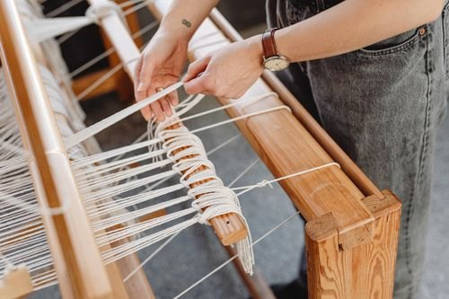

Made slowly, in Shoreditch
LINEN & LOOM is a small London atelier built around a simple idea: choose the cloth first, then make fewer, better pieces.
A working studio, not a concept
We began with a table, two rolls of Belgian linen and a frustration with clothes that looked beautiful for one season and felt forgettable the next. Today the studio is a little larger, but the order of decisions has not changed: cloth, cut, finish.
Every collection is made in small runs at 48 Redchurch Street. We grade to UK sizes 6–18, keep our palette deliberately narrow, and leave enough room in the pattern for a real day — a commute, a long lunch, a last-minute evening.
Shop the collectionHow a piece happens
From the first swatch to the final press, nothing leaves the studio without being handled by someone who knows the whole garment.

We choose the hand-feel
Weight, slub, drape and how the surface will soften. We buy only what we can cut.
We draft for real proportions
Toiles are fitted on real bodies, then graded across UK 6–18 with consistent ease.
Small batches only
Fabric is rested, cut by hand and matched so the grain falls correctly on every panel.
Pressed, checked, wrapped
Horn buttons, clean seams, a final press and a linen dust bag. Then it is ready.
Ethical
Traceable cloth, lower-impact dyes and small production runs.
Woven in Britain
Patterns drafted and finished in our Shoreditch atelier.
Quality
Considered seams, natural fibres and pieces made to be kept.
Easy Returns
Free 28-day UK returns, with fit advice by phone or email.
Come and see the cloth
48 Redchurch St, Shoreditch, London E2 7DP. Appointments Tuesday to Saturday, walk-ins welcome for fabric and accessories.
“The best clothes become part of your life quietly.”
Book a fitting